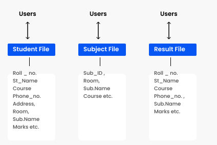

DBMS vs File System
File System Approach
File based systems were an early attempt to computerize the manual system. It is also called a traditional based approach in which a decentralized approach was taken where each department stored and controlled its own data with the help of a data processing specialist. The main role of a data processing specialist was to create the necessary computer file structures, and also manage the data within structures and design some application programs that create reports based on file data.
In the above figure:
Consider an example of a student's file system. The student file will contain information regarding the student (i.e. roll no, student name, course etc.). Similarly, we have a subject file that contains information about the subject and the result file which contains the information regarding the result.
Some fields are duplicated in more than one file, which leads to data redundancy. So to overcome this problem, we need to create a centralized system, i.e. DBMS approach.
DBMS:
A database approach is a well-organized collection of data that are related in a meaningful way which can be accessed by different users but stored only once in a system. The various operations performed by the DBMS system are: Insertion, deletion, selection, sorting etc.
| Basis | DBMS Approach | File System Approach |
|---|---|---|
| Meaning | DBMS is a collection of data. In DBMS, the user is not required to write the procedures. | The file system is a collection of data. In this system, the user has to write the procedures for managing the database. |
| Sharing of data | Due to the centralized approach, data sharing is easy. | Data is distributed in many files, and it may be of different formats, so it isn't easy to share data. |
| Data Abstraction | DBMS gives an abstract view of data that hides the details. | The file system provides the detail of the data representation and storage of data. |
| Security and Protection | DBMS provides a good protection mechanism. | It isn't easy to protect a file under the file system. |
| Recovery Mechanism | DBMS provides a crash recovery mechanism, i.e., DBMS protects the user from system failure. | The file system doesn't have a crash mechanism, i.e., if the system crashes while entering some data, then the content of the file will be lost. |
| Manipulation Techniques | DBMS contains a wide variety of sophisticated techniques to store and retrieve the data. | The file system can't efficiently store and retrieve the data. |
| Concurrency Problems | DBMS takes care of Concurrent access of data using some form of locking. | In the File system, concurrent access has many problems like redirecting the file while deleting some information or updating some information. |
| Where to use | Database approach used in large systems which interrelate many files. | File system approach used in large systems which interrelate many files. |
| Cost | The database system is expensive to design. | The file system approach is cheaper to design. |
| Data Redundancy and Inconsistency | Due to the centralization of the database, the problems of data redundancy and inconsistency are controlled. | In this, the files and application programs are created by different programmers so that there exists a lot of duplication of data which may lead to inconsistency. |